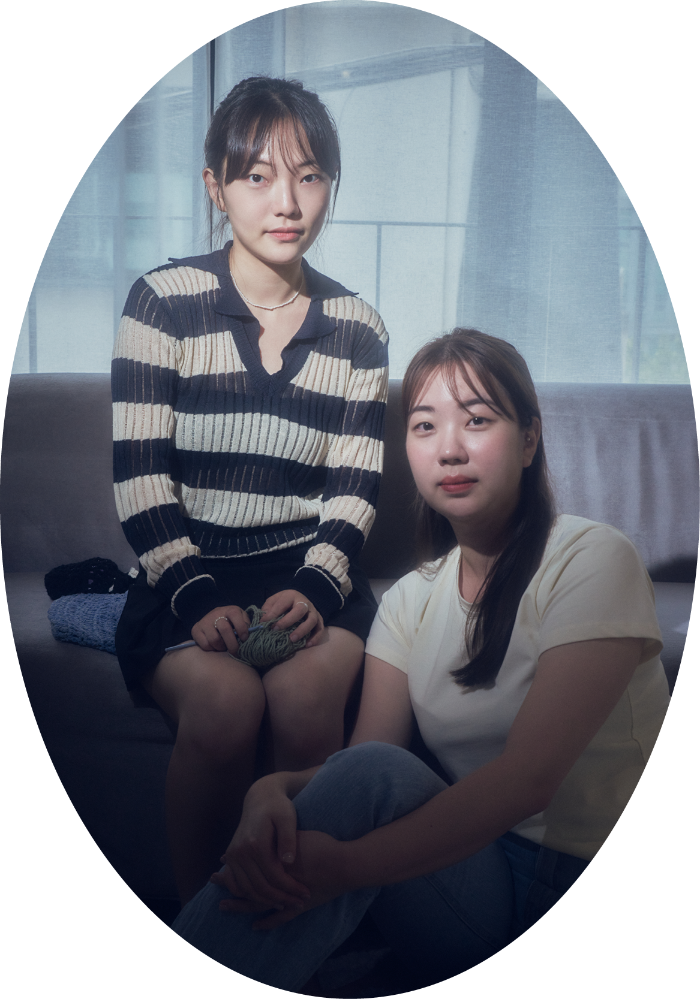
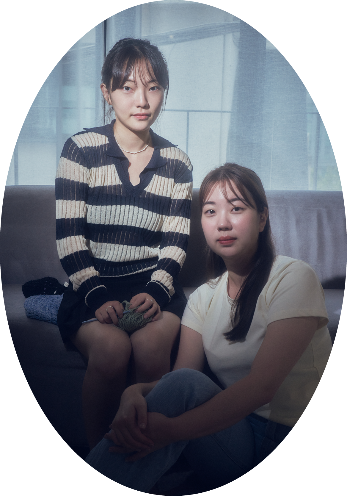

취미로 시작했던 뜨개질과 비즈공예로 브랜드를 시작하신 거잖아요. 취미로 할 때의 마음과 진심으로 브랜드가 잘 되었으면 하는 마음으로 일할 때 가지게 되는 차이가 있을까요?
수미 원래는 너무 재미있어서 취미로 비즈를 만들었어요. 지금은 돈을 받고 파는 거니까 취미라고만 말할 수 없죠. 책임감이 생기니까요. 취미로 할 땐 반짝반짝하고 파스텔톤으로 알게 모르게 제 스타일이 반영된 것들이 있었어요. 그렇게 제 취향이 담긴 반지를 만나는 사람들마다 주고 그랬어요. 그런데 포근반짝 제품을 만들 때는 대중성을 고려하죠. 제 취향은 아니에요. 파는 것과 제 취향은 확실히 차별점이 있는 것 같아요. 가끔 제 취향대로 만들어 팔까 고민할 때도 있지만 포근반짝 콘셉트도 있어서 망설이다가 안 하게 되더라고요.
일상과 일이 구분 안되는 어쩔 수 없는 지점이 있는 것 같아요. 예를 들어 빨간색 목걸이 사진이 없다면 ‘오늘 친구 만날 때 목걸이하고 빨간색 원피스 입고 가서 사진 찍어달라고 해야지. ’이런 생각이 문득 들어요. 어디까지가 일인지 알 수가 없고 여기까지만 해야지라고 정하기 어렵더라고요. 블로그 마켓을 하는 친구가 있는데 보니까 나도 진짜 숨 쉬듯이 인스타그램을 해야겠다고 생각이 들었어요. 저희는 2,3일 열심히 올리다가 잠시 까먹었다가 ‘아 맞다!’ 이렇게 하게 되는데 그러면 안 되겠더라고요.
사업자 내고 네이버 스토어 시작하는데 어려움은 없었나요?
수미 인터넷에 정보도 많고 스마트 스토어 만들기 쉽더라고요. 저도 어떻게 하는지 알아보는 중이었는데 그냥 바로 열리더라고요. 진영이에게 “내가 어떻게 하는지 알아보다가 열어버렸어!” 하면서 네이버 아이디 새로 만들고 그랬어요. 이전에 해본 적도 없고 전문적인 것도 아니라서 처음에 시작하기에는 부족하다고 생각했는데 요즘엔 불안한 상태에서도 시작할 수 있는 게 많잖아요. 인스타그램 게시물로 하나씩 파는 사람들도 있고 쉽게 접근할 수 있는 플랫폼들도 많으니까 새로 생기는 브랜드가 엄청 많은 것 같아요. 곁들이는 느낌으로 도전해 보는 사람들도 많고요.
 
